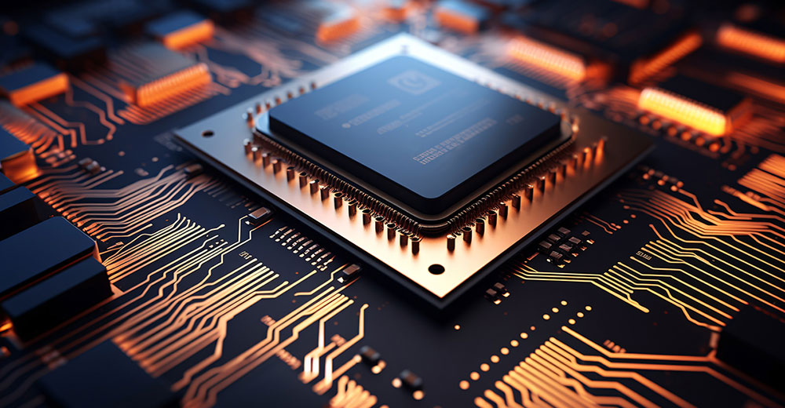

Chip Wars of 2024: Will a Cell Phone Take the Laptop Crown?
As industry leaders in chip manufacturing vie for supremacy, there’s mounting speculation that the capabilities of smartphones might soon rival the traditional dominance of laptops.
AMD, Intel, and Qualcomm are all focused on creating a technology that will make Apple’s M3 chip look outdated while fully embracing AI and increasing battery life.
Rumors suggest that even Nvidia is pursuing an Arm-based solution. This motivation was part of the reason for its failed attempt to buy Arm, which has since gone public.
RISC-V is in the wings, and as Arm struggles with its licensing model, that platform is looking ever more attractive, yet it hasn’t emerged as a threat to PCs.
Adding another twist to the narrative, OpenAI’s ChatGPT is exploring the development of a neural processing unit (NPU) that could supplant GPUs for high-performance large language models, such as generative AI and the like.
This activity will take place mostly late in 2024, suggesting there will be a battle royale. Yet, behind the scenes, companies are discovering that smartphones increasingly may be able to make laptops redundant.
So, the winner in 2024 will need to defend against the rise of smartphones, which would favor Qualcomm and Lenovo. Apple will resist this because it wants people to buy both products.
Let’s talk about the laptop chip wars of 2024 this week, and we’ll close with my Product of the Week, an affordable, high-end, 4K touchscreen and graphics monitor from Wacom.
Laying Out the Battlefield
Intel has been admirably recovering from its mistakes of the past decade. It’s an entrenched vendor, so all it really needs to be is good enough.
Challenging vendors must convince potential customers that Intel isn’t good enough, but that is a surprisingly high bar. Intel’s defense will depend heavily on its Lunar Lake part, which is, on paper, as powerful as what AMD has coming and as efficient as what Qualcomm has on the way.
However, Intel has lots of distractions. From the war in Israel, where one of Intel’s biggest FABs is located, to the fallout from layoffs and salary reductions, Intel has more distractions than its peers, which will stand against its timely execution. So far, I’m not seeing any issues, but if the OEMs do, they’ll hedge with one of the others.
AMD
AMD has been a shining star of execution.
Focused on PCs, the company continues to perform well and gain share. AMD’s Ryzen 8000 processors with Zen 5 are likely to outperform Intel’s Lunar Lake, but remember that Intel only has to be good enough, meaning that AMD’s performance must be high enough to convince buyers to convert to AMD.
Existing AMD customers will stay with the company, but for market growth, the bar for AMD is exceedingly high. It would require creating a highly competitive part and a major advertising campaign to make people less happy with Intel. Such campaigns are not something AMD typically funds, making it less likely AMD will take a significant share from Intel even if its parts significantly outperform Intel’s.
Qualcomm
Qualcomm’s Snapdragon X Elite is a fascinating new processor, but it isn’t x86-based; it’s Arm-based. Because of this architecture, the processor must run an x86 emulator, which can reduce the user’s perception of performance. Such a requirement demands a far larger leap of faith than AMD requires.
While the battery life and AI performance numbers for the Snapdragon X Elite on paper are impressive, they might not be substantial enough to penetrate a market currently dominated by the x86 standard.
Qualcomm is getting a lot of unusual help from Microsoft, which loves this technology, but Microsoft’s latest showcase laptop, the Surface Studio 2, is Intel-based. Qualcomm has a greater dependency on Microsoft than AMD does, so the success of this part will be tied tightly to Microsoft’s support and Qualcomm’s marketing.
Regarding marketing, Qualcomm normally depends on its OEMs to market, which seems to work fine for smartphones but hasn’t worked out for PCs in years.
Qualcomm would have a greater shot if it took a more competitive approach and attacked via smartphones. None of Qualcomm’s competitors for PCs have smartphone positions.
I’m seeing increasing testing of using smartphones to displace laptops, and I expect someone will eventually get this right. If they do, Qualcomm is in the best position to benefit, which would place Qualcomm’s strength against the weakness of its competitors rather than vice versa.
Nvidia
As noted, Nvidia is a wild card here, and we know little about its Arm-based CPU effort.
Nvidia has relationships with all the PC OEMs and a leadership position in AI, which gives it a far stronger chance than it would have otherwise to be a disruptor in this market.
Having executed extremely well and anticipated market moves before its peers, Nvidia has been a force to reckon with over the last decade. It uses AI internally more than most of its competitors, suggesting it could develop a brand-new approach to finding a blend of traditional performance and AI superiority.
I expect Nvidia to surprise the market. How big a surprise is still unknown.